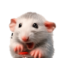

Slow down. You're not a rat.
Hello! You've been scrolling like a tiny, frantic creature in a maze, clicking with the manic energy of a raccoon who's found an unattended bin. This little extension is here to take you by your metaphorical shoulders and say: breathe. You are a sophisticated person of taste, not a rodent chasing a pellet.
It is, simply, the most chic intervention your browser has ever staged. When Not a Rat notices you doomscrolling or click-click-clicking like a wild animal, it gently — but with flair — interrupts the spiral.
A rat appears. It is not judging you, exactly, but it would like you to consider your choices. Then it asks you, with the warmth of a slightly disappointed mother, to take a deep breath.
We have all, at one point, found ourselves at the bottom of a feed at an ungodly hour, eyes glazed, thumb moving of its own accord. It's the kind of behavior one simply does not discuss at brunch.
Not a Rat exists to restore your dignity. It is a small, loving nudge, the friend who gently removes the cocktail from your hand and says, "I think you've had a lovely time, and now it's time to drink some water." You are capable of so much more than this. So slow down. You're not a rat.